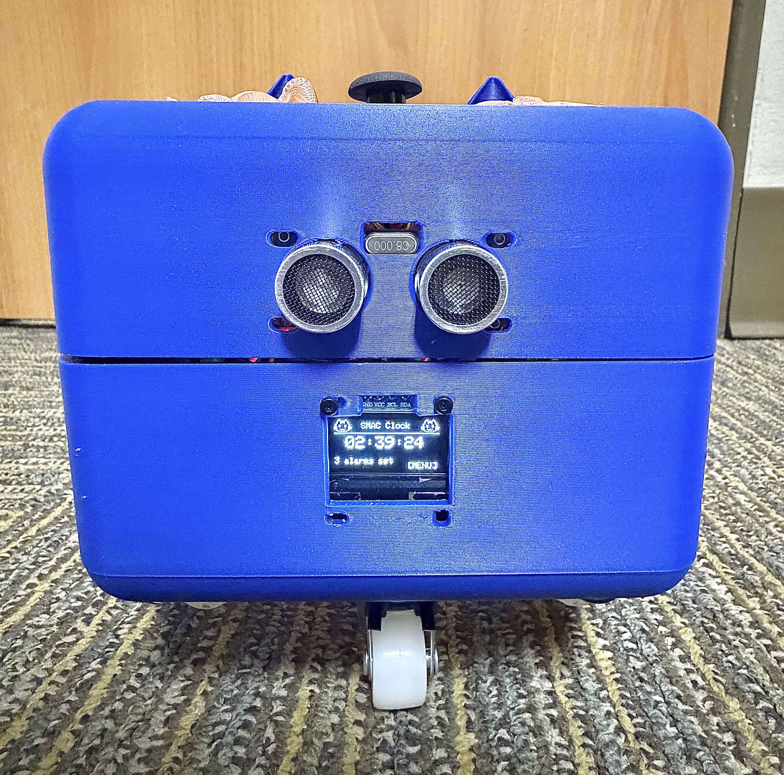

Projects
Projects listed from most to least recent. Click on the links or scroll down to go to the project description. Larger images can be seen via Google Drive.
- 4 - PocketQube in Progress (Wisconsin SmallSat) - August 2026
- 3 - Gearbox + Assembly Fixtures/Jigs (C-Motive Technologies) - Summer 2026
- 2 - Smart Moving Alarm Clock (IEEE SSCS Contest) - July 2026
- 1 - Simple Sensor Data Transmission + GUI (Wisconsin SmallSat) - April 2026
Projects 3+: Assembly Fixtures and Jigs - Summer 2026
As a mechanical engineering intern at C-Motive Technologies, Inc., I designed and built
various fixtures and jigs to assist with the process of building electrostatic motors. This ranged from simple parts for quicker assembly
(e.g. a plug for preventing epoxy from leaking into the bore of a part) to more involved assignments such as gearbox design and force analysis.
Skills Gained
Gearbox
This custom two-stage gearbox is designed for a high-volume, low-speed industrial ceiling fan to be used in conjunction with electrostatic motors from C-Motive Technologies, Inc.
For this project, I primarily focused on modeling the gear and shaft designs in SolidWorks. I also calculated gear and key forces, then analyzed shaft stresses using the SolidWorks FEA Simulation feature.
Other skills and design concepts I learned about and contributed to include:
- ♡ ~ involute gear and shaft design
- ♡ ~ material and part (snap rings, seals, washers) selection
- ♡ ~ gear/key force and factor of safety analysis
- ♡ ~ bearing lifespan and load calculations
- ♡ ~ reading ISO 492 tolerance tables for bearings
- ♡ ~ interpreting ABEC classes and fastener grades
- ♡ ~ documenting the full part selection process
Problem: Many parts need to be cleaned in the ultrasonic cleaner. This takes a lot of time to do manually, especially for smaller parts.
Solution: I designed and built a tray/basket carrier that can dip many parts at the same time to make the cleaning process easier.
Problem: The motors are extremely heavy and need to be rotated often during assembly. There is also a large amount of parts that must be used during assembly, making organization difficult.
Solution: I designed a turntable appropriate for the cleanroom on which the motor can easily spin and uses a locating pin to stop rotation. The bottom plate also includes separating walls for easier organization of small parts.
Problem: High potential testing applies high voltages to parts to evaluate insulation, which can be very dangerous.
Solution: I created a hands-off fixture that allows the user to align the copper set screw lugs onto the bussing features of the appropriate phases of the plate subassemblies. This gives the user a path to simply apply the appropriate test voltages to the desired phases without touching potentially live components.
Click to See Other Projects
Problem: Cleaning and drying the plates is currently very labor intensive.
Solution: This carrier allows the user to clean then dry up to 15 plates at a time without much movement. The closing mechanism uses a quick link, stainless steel chains, and a snap hook to allow easy placement and removal of plates. I also completed a basic static simulation of the part and discovered that there is minimal displacement in the Z-direction and essentially no torsion.
Problem: We want to see how much plates deflect when under load.
Solution: I worked on improving the boundary conditions of this Python model using the Kirchkoff-Love thin-plate theory and removed slightly under a thousand lines of redundant code.
Problem: Epoxy often bubbles into the center bore of the rotor connector during the potting process and is difficult to completely remove when the potting process is complete.
Solution: I created a 3D-printed plug that prevents any leakage and also wrote a SOP for the rotor connector build.
Problem: The motors have quick connect fittings for the dielectric fluid fill process that most fingers could fit into and break the seal. We don't want someone who doesn't understand the importance of the seal to be able to modify the sealing.
Solution: I created a 3D-printable cap such that it would take extreme force to access the interior of the fittings. This was ultimately successful and we had to use a hammer to get the prototypes off.
Problem: The cabinet broke.
Solution: I made a replacement 3D-printed part that allowed the door to open smoothly again.
Problem: The mount for dynamometer testing was outdated.
Solution: I created a second revision of the mount assembly for the brake dynamometer, which tests motor durability, to fit the newest motor model. I also rebuilt the newest version.
Problem: The chemistry team needed more housings for their paper membrane filters.
Solution: I modeled the housing in SolidWorks then created a drawing with GD&T guidelines.
Project 2: Smart Moving Alarm Clock - July 2026
Many people struggle with waking up on time and missing important events. The Smart Moving Alarm Clock (SMAC) is a custom built clock that seeks to solve this issue by runs away when the preset alarm time is reached, so that you have to consciously turn off the alarm instead of snoozing it. I created the CAD model, programmed the integration of the weather forecast on the clock and web application, as well as combined all systems (motor and audio circuit) into the final product. We are currently looking into a second revision with leaderboards to compare alarm habits with friends and a potential text to speech function that will summarize the weather forecast after shutting off the alarm. This was created in collaboration with Run Chen and Ritika Lakare.
Skills Gained

Project 1: Cansat Electrical Prototype - April 2026
I am the co-founder and software director of the Cansat project for Wisconsin SmallSat, a new engineering competition team at the University of Wisconsin-Madison. I currently lead development on the electrical power, sensor, and ground communication subsystems. This simple first electrical prototype consists of a working graphical user interface showcasing live temperature/pressure/altitude data transmission utilizing a bluetooth HC-05 module. Credits to Ritika Lakare and Oleksandr Kurtianyk for help with wiring and component research.
Skills Gained